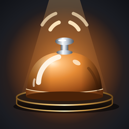

Passbell — Support
Passbell works entirely offline. This page answers the common questions and says how to reach us.
Contact
Questions and bug reports: passbell@cmounierconsulting.com
We read every message and reply as soon as we can. Please give your device model, iOS version and the app version.
There is no account, and nothing to recover
Passbell has no server, no login and no cloud save. Your progress and settings are stored on your own device and nowhere else. If you delete the app, your progress is gone for good: we never had a copy. If your device is backed up, restoring it from that backup restores the game’s data with it.
Common questions
- A ticket looks impossible.
- Every ticket can be served, and its best minute is proven. Tap Chef: he shows you the next step. It costs no star.
- A plate went cold.
- It was ready too early and waited on the pass. Move its last step later, so that every plate is ready at the same minute.
- The fuse is too fast for me.
- Turn on Settings → Relaxed service: no fuse on the final rushes, everything else the same.
- How do I change the language?
- Settings → Language: English, French or Spanish.
- Can I play without dragging?
- Yes. Tap a step on the ticket, then tap a minute on a station row.
- Do I need an internet connection?
- No. Once the game is downloaded, never, for anything.
- Is there a subscription, or anything to buy inside the app?
- No. You buy the game once. No ads, no in-app purchases.
Refunds are handled by Apple: reportaproblem.apple.com.
Published by CMounier Consulting (SASU), SIREN 940314636. Legal notice.
Passbell — Assistance
Le jeu Confidentialité Assistance
Passbell fonctionne entièrement hors ligne. Cette page répond aux questions courantes et indique comment nous joindre.
Contact
Questions et signalements de bugs : passbell@cmounierconsulting.com
Nous lisons chaque message et répondons dès que possible. Indiquez le modèle de l’appareil, la version d’iOS et la version de l’application.
Il n’y a pas de compte, et rien à récupérer
Passbell n’a ni serveur, ni connexion, ni sauvegarde dans le cloud. Votre progression et vos réglages sont enregistrés sur votre appareil et nulle part ailleurs. Si vous supprimez l’application, votre progression est perdue définitivement : nous n’en avons jamais eu de copie. Si votre appareil est sauvegardé, le restaurer depuis cette sauvegarde restaure aussi les données du jeu.
Questions courantes
- Un ticket semble impossible.
- Chaque ticket peut être servi, et sa meilleure minute est prouvée. Touchez Chef : il vous montre l’étape suivante. Cela ne coûte aucune étoile.
- Une assiette a refroidi.
- Elle était prête trop tôt et a attendu sur le passe. Placez sa dernière étape plus tard, pour que toutes les assiettes soient prêtes à la même minute.
- La mèche va trop vite pour moi.
- Activez Réglages → Service détendu : pas de mèche sur les coups de feu, tout le reste identique.
- Comment changer de langue ?
- Réglages → Langue : français, anglais ou espagnol.
- Peut-on jouer sans glisser ?
- Oui. Touchez une étape sur le ticket, puis une minute sur la ligne d’un poste.
- Faut-il une connexion internet ?
- Non. Une fois le jeu téléchargé, jamais, pour rien.
- Y a-t-il un abonnement, ou quelque chose à acheter dans l’application ?
- Non. Vous achetez le jeu une fois. Ni publicité, ni achat intégré.
Les remboursements sont traités par Apple : reportaproblem.apple.com.
Édité par CMounier Consulting (SASU), SIREN 940314636. Mentions légales.
Passbell — Asistencia
El juego Privacidad Asistencia
Passbell funciona completamente sin conexión. Esta página responde a las preguntas habituales y explica cómo contactarnos.
Contacto
Preguntas e informes de errores: passbell@cmounierconsulting.com
Leemos todos los mensajes y respondemos lo antes posible. Indica el modelo del dispositivo, la versión de iOS y la versión de la app.
No hay cuenta, ni nada que recuperar
Passbell no tiene servidor, ni inicio de sesión, ni guardado en la nube. Tu progreso y tus ajustes se guardan en tu dispositivo y en ningún otro sitio. Si borras la app, tu progreso se pierde para siempre: nunca tuvimos una copia. Si tu dispositivo tiene copia de seguridad, restaurarlo desde esa copia restaura también los datos del juego.
Preguntas habituales
- Una comanda parece imposible.
- Todas las comandas se pueden servir, y su mejor minuto está demostrado. Toca Chef: te muestra el paso siguiente. No cuesta ninguna estrella.
- Un plato se ha enfriado.
- Estaba listo demasiado pronto y esperó en el pase. Coloca su último paso más tarde, para que todos los platos estén listos en el mismo minuto.
- La mecha va demasiado rápido para mí.
- Activa Ajustes → Servicio tranquilo: sin mecha en los golpes de fuego, todo lo demás igual.
- ¿Cómo cambio el idioma?
- Ajustes → Idioma: español, inglés o francés.
- ¿Se puede jugar sin arrastrar?
- Sí. Toca un paso de la comanda y luego un minuto en la fila de un puesto.
- ¿Necesito conexión a internet?
- No. Una vez descargado el juego, nunca, para nada.
- ¿Hay suscripción, o algo que comprar dentro de la app?
- No. Compras el juego una vez. Sin anuncios ni compras dentro de la app.
Los reembolsos los gestiona Apple: reportaproblem.apple.com.
Publicado por CMounier Consulting (SASU), SIREN 940314636. Aviso legal.